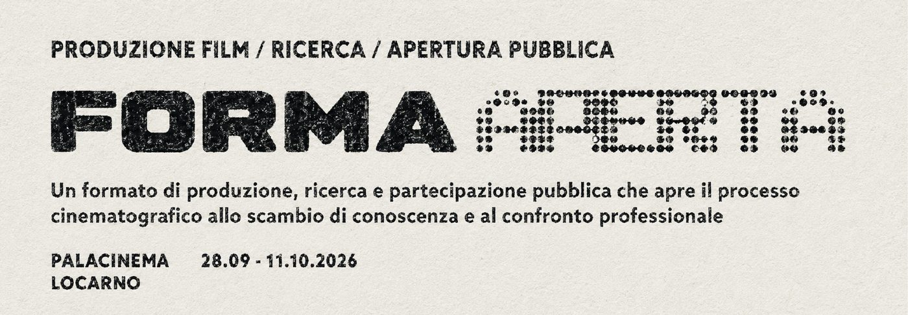

Open talk · Launch of FORMA APERTA
Where does the creative process live?

The talk
Automation and distributed production have pulled filmmaking apart: the work now happens across tools, teams and machines that rarely share a room. FORMA APERTA opens with the question that follows from that.
With the arrival of automation and distributed production, where does the making of a film happen today?
One hour, four voices, and the public launch of the format. The team presents the project, the film it is built around, and the two weeks of open production that follow at the PalaCinema in Locarno.
On stage
- Felix Bachmann
- Kevin Merz
- Manuela Bachmann — Generative Center · FORMA APERTA production
- Simona Gamba — Living Lab Lugano
The project
FORMA APERTA is developed by Generative Center with PalaCinema Locarno. From 28 September to 11 October 2026 it turns the shoot and the early generative phase of the film Daniel JeanRichard into a temporary space for research, encounter and exchange between audiovisual professionals, researchers, students and the public.
At its centre is the Live Production Workflow — the main production phase of Daniel JeanRichard, the first film in the series The Industry of Time, on the history and the transformations of Swiss watchmaking. The film combines historical research, performance, traditional audiovisual craft and generative tools.
Running alongside is a strand of research on the concrete use of AI in filmmaking: the models and tools employed, the attempts at generation, what was produced against what was actually used, and the electricity and water it cost. The first findings are presented on 9 October.